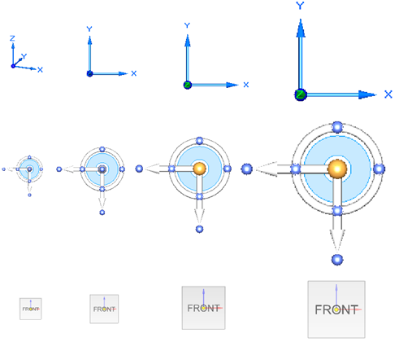
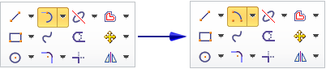

Helpers tab (Solid Edge Options dialog box)
Controls settings for assistance as you use Solid Edge.
- Starting Solid Edge
-
Choose from the following options to specify what you want to display as the Solid Edge start page.
- Start with the Discover page
-
Contains tabs for the Start and Learn pages.
-
The Start page assists you get started with Solid Edge. This page contains links to an introductory video, tutorials for understanding the basic capabilities of Solid Edge, and a link to a video overview of the Solid Edge user interface. You can also use the links on this page to create new Solid Edge documents.
-
The Learn page hosts links to learning tools, tutorials, Try It activities, a link to What's New in the current release, and it opens Solid Edge 2023 Help.
Note:If you set a custom start page, the Learn tab on the Discover page is replaced by the custom page.
-
- Start with the New page
-
Displays the New page when Solid Edge starts. Use this option when you want to create different types of documents, or when you are creating or updating templates.
- Start with the Open page
-
Displays the Open page when Solid Edge starts. This page provides fast access to your recently used files list and to pinned documents. You also can browse for files and folders.
Note:The Open page is displayed by default when no documents are open in Solid Edge and either of the following options is selected.
- Start with a Blank page
-
Does not display any page or document when Solid Edge starts. This option provides a spacious, uncluttered canvas for an experienced user.
- Start with my last saved document
-
Similar to a bookmark, opens Solid Edge with the last document you saved displayed in the application window, ready for work. You can use this option when you are making frequent changes to the same document.
- Start with a blank document using this template
-
Opens Solid Edge in the appropriate environment with a new document based on the template selected in the adjacent list. You can use this as your start page when you are creating models or drawings.
Note:The templates listed are based on the standard that was selected during Solid Edge installation. To change the template, use the File menu→New page→Edit List... link.
- Start Part and Sheet Metal documents using this environment
-
Specifies that Solid Edge starts with either the synchronous or ordered environment.
- Edit Creation Options
-
Displays the File Creation Options dialog box so you can specify the templates used to create files. You can add or remove template files from the list. To reorder the list of templates, you can use the Move Up and Move Down buttons.
- Set Default Templates
-
Displays the Default Templates dialog box, so you can specify the default template name and location for the different document types.
- General
-
- Application color scheme
-
Specifies the color scheme to apply to the Solid Edge application window, highlighting, and other interface elements, including the command ribbon background. The default color scheme is Light.
Note:The window color scheme is controlled separately by Windows.
- Show command tips
-
Specifies whether command tips are displayed as you work in Solid Edge.
- Reset Tips
-
Resets command tips. All command tips that were previously displayed, and are turned off, are displayed again.
- Show sensor indicator
-
Specifies whether sensor warning and violation notifications are displayed in the graphics window in part, sheet metal, and assembly documents. This option also activates or deactivates the Sensor Assistant.
When this option is cleared, violation and warning notifications are visible only on the Sensors tab on PathFinder. This option does not affect the sensors themselves.
- Place new graphic window tabs
-
Determines the placement of tabs in relation to existing tabs when you open a new graphic window in Solid Edge.
- Translucent PathFinder and Vertical Command Bar
-
Controls whether or not PathFinder and Vertical Command Bar are translucent.
When checked, you can use the Less/More slider to control the amount of translucency.
- Steering Wheel, OrientXpres, and View Cube size
-
Adjusts the relative sizing of the steering wheel, OrientXpres tool, and Quick View Cube control.
Use this option to choose a larger size for Solid Edge design tools, so that they are easier to use on screens of different sizes and resolutions. From left to right, the size options are Small (0.75 inches), Medium (1.00 inches), Large (1.25 inches), and Extra Large (1.50 inches).

Note:When using a high-resolution monitor, we recommend setting the primary DPI scaling for the entire desktop in Microsoft Windows.
For example, from the Microsoft Windows 10 Start menu, go to:
-
Settings→System→Display →Advanced scaling settings.
-
In the Custom scaling box, enter a custom scaling size of 200%:
- Predict Commands
-
The options in this section pertain to the Adaptive UI, which implements machine learning (ML) and artificial intelligence (AI) in Solid Edge. It controls the set of commands that appear on the horizontal toolbar below the command ribbon, which vary with your environment and your design context.
Note:The Use Predict Commands option is cleared (turned off) in the out-of-box configuration when the licensing requirements are met.
- Use Predict Commands
-
When cleared, turns the Predict Commands toolbar off and stops the machine learning.
When set, resumes machine learning from the point where you stopped.
- Show command button text
-
Displays the command button name along with the command icon.
This option is selected by default.
- Hide command button text
-
Hides the command button name and displays only the command icon.
If you are familiar with Solid Edge commands, you may want to select this option to reduce the space occupied by the commands on the Predict Commands toolbar.
- Mesh Modeling
-
- Warn users when a design or construction body changes to mesh body
-
This option warns you when a design body or construction body is converted to a mesh model during an operation such as Boolean or Replace Face.
- Command Buttons
-
- Show basic tooltips
-
Displays brief tooltips when you pause over parts of the Solid Edge interface.
- Show enhanced tooltips
-
Displays additional information (text and an image) showing how you can use a command.
- Show video clips
-
Displays the same enhanced text, but it plays a brief video clip instead of showing an image.
- Last used command (in droplists) stays on top
-
Specifies that the last command that you selected from a list on the command ribbon stays on top as the default command. This applies across all environments.
Use this option to make a frequently used command on the ribbon available with one click instead of two.
Example:When this option is selected, the default command, Tangent Arc, is replaced by the selected command, Arc By Center Point, on the top of the stack.

- Radial Menus
-
- Use gestures
-
Specifies whether mouse gestures are used to launch radial menus.
- Drag distance for gesture
-
When holding down the right mouse button, this specifies the relative distance the cursor must travel before that movement is recognized as a gesture to start a command on the radial menu. Use the slider to adjust the distance as measured on a scale of Shorter to Longer.
Use the Drag distance for gesture option to account for differences in monitor sizes.
- Show radial menu after
-
Specifies the elapsed time the right mouse button must be pressed to display the radial menu. Measured in milliseconds.
- Show context toolbar
-
Displays the context toolbar in the ordered, synchronous, assembly, and draft environments where sketching is supported.

For more information, see Using the 2D sketching context toolbar and Using context toolbars with 3D elements in the ordered environment.
- Advanced Design Intent Panel
-
- Show panel in the document view
-
When you set this option, the Advanced Design Intent panel is displayed at a fixed location in the document view.
- Show as a floating panel
-
When you set this option, the Advanced Design Intent panel becomes a floating panel that you can drag around in the document view.
- Make panel vertical
-
Activate this option to change the Advanced Design Intent panel to a vertical orientation.
- Document Name Formula
-
Displays a value you compose by selecting various document properties. The list of available properties you can choose from is based on your active document. You can use the formula in place of the file name throughout Solid Edge.
- Change
-
Displays the Document Name Formula dialog box, so you can replace the display of the file name with a formula composed of document properties.
- Document Status
-
- Force Top Down on SEStatus Release
-
Enforces the concept of top-down status such that all linked components have adequate status before they can be set to Released.
Example:An assembly cannot be set to Released if any component in the assembly is not at least at released status.
- Help System
-
Controls whether user help accesses the Siemens-hosted website or a privately hosted local help server. For more information, see Using a local help server.
- Access help from my server (requires you to set up a help server)
-
Specifies that a locally installed version of help is used. The URL to your local help server is required in the Help location text box.
Example:Use this format to define the location:
http://www.mycompany.com/tdoc/se/223/se_help/#uid:index
Note:For instructions on installing and configuring a local help server, see the Solid Edge Help Installation Guide available from the Support Center website under Solid Edge→Downloads→Solid Edge 2023 Add-Ons→Help Collections. A WebKey is required to access the site.
- Language
-
Use this option to change the language used to display the user interface. This does not affect the engineering data files, such as hole tables, material tables, templates, and preference files, which were installed initially based on the locale settings detected during setup.
- Use English in the user interface
-
When selected, displays the user interface elements in English.
When deselected, Solid Edge displays the user interface associated with the system language settings specified during installation.
In either case, you must close and restart Solid Edge for the change to take effect.
Note:On the Windows 10 operating system, your locale is defined by the current Language (Region) selection on the Microsoft Windows Control Panel→Region→Formats tab.
When you change the language used to display the Solid Edge user interface (either by changing the operating system locale or using this check box), Solid Edge displays a warning message regarding the mismatch of regional settings and last-used locale.
You can do either of the following:
-
Close Solid Edge. Use the Settings and Preferences Wizard to back up your registry settings, custom settings, and AppData files, and then use the wizard to restore Solid Edge factory defaults. For more information, see Deploy custom settings and preferences.
-
Continue working in Solid Edge, understanding that there could be some compatibility issues.
-
How do I
Open the Solid Edge Options dialog boxLearn more
File locationsLook up more details
General tab (Solid Edge Options dialog box, Draft environment)View page (Solid Edge Options dialog box, Draft environment)
Save page (Solid Edge Options dialog box)
File Locations page (Solid Edge Options dialog box)
Manage tab, Solid Edge Options dialog box
User Profile page (Solid Edge Options dialog box)
Manage page (Solid Edge Options dialog box)
Dimension Style page (Solid Edge Options dialog box)
Drawing View Style tab (Solid Edge Options dialog box)
Generative Design tab (Solid Edge Options dialog box)
Drawing View Wizard tab (Solid Edge Options dialog box)
Attachment Units page (Solid Edge Options dialog box, Draft)
Edge Display tab (Solid Edge Options dialog box)
Drawing Standards tab (Solid Edge Options dialog box)
Annotation tab (Solid Edge Options dialog box)
General page (Solid Edge Options dialog box, Part environment)
General page (Solid Edge Options dialog box, Profile environment)
Colors tab (Solid Edge Options dialog box)
Colors tab (Solid Edge Options dialog box, Draft)
View page (Solid Edge Options dialog box, Part environment)
Inter-Part page (Solid Edge Options dialog box)
Simulation tab (Solid Edge Options dialog box)
Thermal Load Options dialog box
General page (Solid Edge Options dialog box, Assembly environment)
Units page (Solid Edge Options dialog box)
View page (Solid Edge Options dialog box, Assembly environment)
Assembly page (Solid Edge Options dialog box)
Assembly Open As page (Solid Edge Options dialog box, Assembly environment)
Shape Search page (Solid Edge Options dialog box)
Requirements page (Solid Edge Options dialog box)
Electrical Routing page (Solid Edge Options dialog box)
Tube Properties page (Solid Edge Options dialog box)
Flat Pattern Treatments page (Solid Edge Options dialog box)